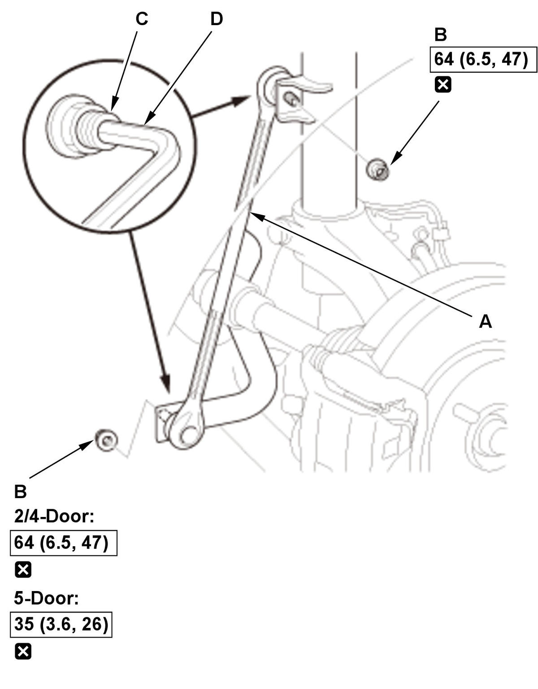
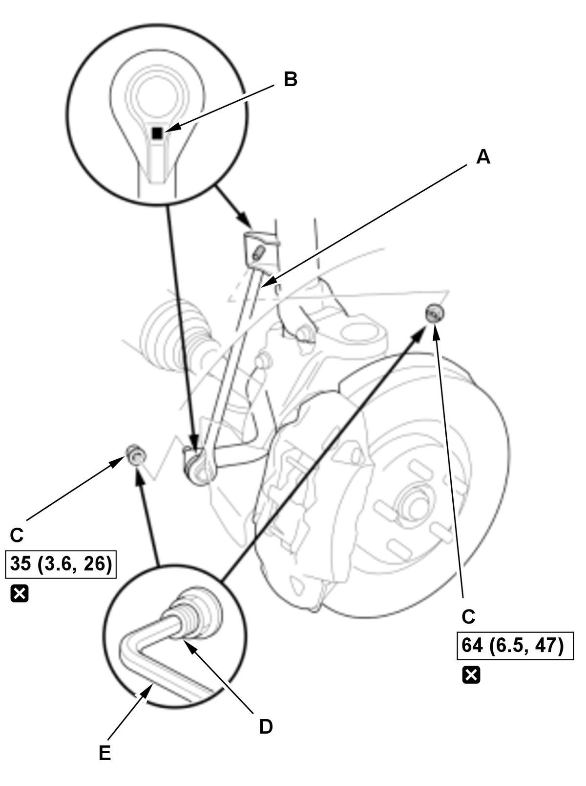

Front Stabilizer Link Removal and Installation: Installation
NOTE:
- How to read the torque specifications .
- Unless otherwise indicated, illustrations used in the procedure are for 2/4-door.
- Stabilizer Link - Install

Courtesy of HONDA, U.S.A., INC.Except Type-R
1. Install the stabilizer link (A).
2. Install the new flange nuts (B), then tighten them to the specified torque while holding the respective joint pin (C) with a hex wrench (D).

Courtesy of HONDA, U.S.A., INC.Type-R
1. Install the stabilizer link (A).
NOTE: The stabilizer link has a position mark (B). The left stabilizer link is marked with "L", and the right stabilizer link is marked with "R".
2. Install the new flange nuts (C), then tighten them to the specified torque while holding the respective joint pin (D) with a hex wrench (E).
- Front Wheel - Install